<!-- Project Template -->
<div class="container-fluid project-modal-window">
    <div class="row">
        <div class="col-sm-12 ">
            <div class="img-head" style="background-image: url('../../img/portfolio/delray/del-ray-addtion-craftsman-style-white-kitchen-dark-counters-chrome-hardware.jpg');">

            </div>
        </div>
        <div class="col-sm-7">
            <div class="modal-pad">
                <h2>	Del Ray Addition and Renovation</h2>
                <h5>Whole House Renovation and Addition</h5>
                <strong>The Challenge:</strong>
                <p>
                  An early 20th century, single-family home had been outgrown by its owners.  A growing child's need for a dedicated play space and room to bring the entire family together around the kitchen inspired this family to change. The desire for a master suite was further impetus to call the owners to action. The site faced upon two streets creating a challenge as to how to address the issue of two frontages.
                </p>
                <strong>The Solution:</strong>
                <p>
                  Zoning restricted the design to a rear addition.   Creating a formal Craftsman-style elevation to face the street running behind the house solved the problem of turning your back to the street. A full three-level design created a kid-friendly basement play room, first floor family room and second floor master bedroom with en-suite bath.  As to not over power the scale of the existing home, we brought down the visual proportions of the full two stories above ground by using the imagery of a single-story Craftsman with dormers to balance and minimize the height and scale. The architectural slight of hand to run the roof overhangs out, tricks the eye into thinking it is a one-story addition when it is in fact two full floors.
                </p>
                <p>
                  Removal of the rear wall allowed placement of a new peninsula counter with seating which opened the kitchen to the large family room.  Oversized windows on three sides fill the space with light.  The master bedroom accessed through the home offices' double doors leads you to the bedroom and a bright light filled master bath.  To welcome and protect the family from the elements, we sheltered the rear entry sheltered beneath the roof overhang.

                </p>

            </div>
        </div>
        <div class="col-sm-5 modal-pad">
            <div class="modal-pad port-img-overflow">

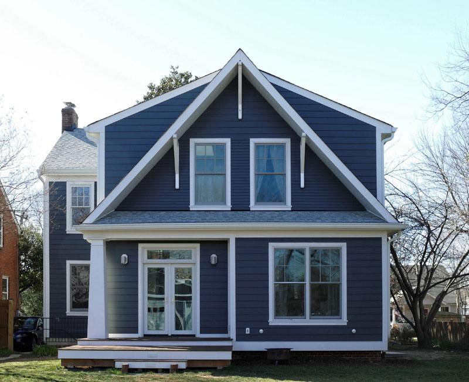
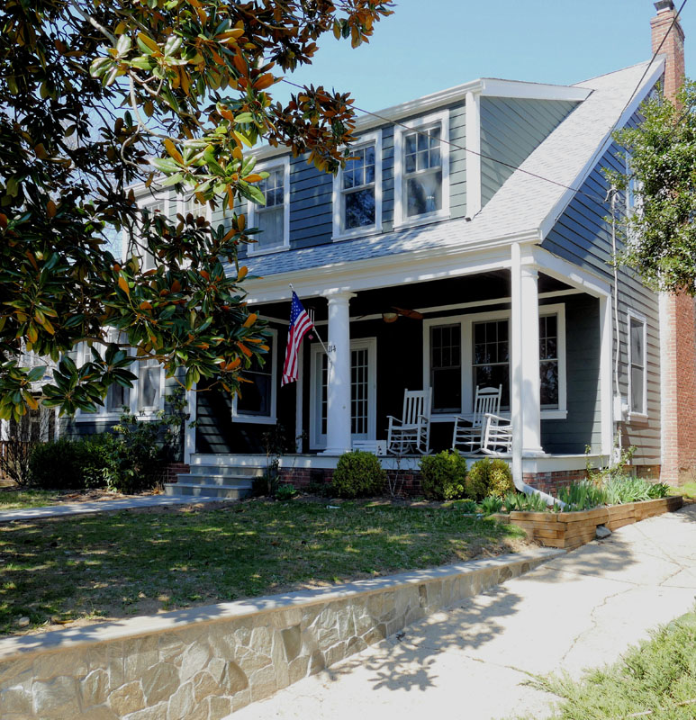
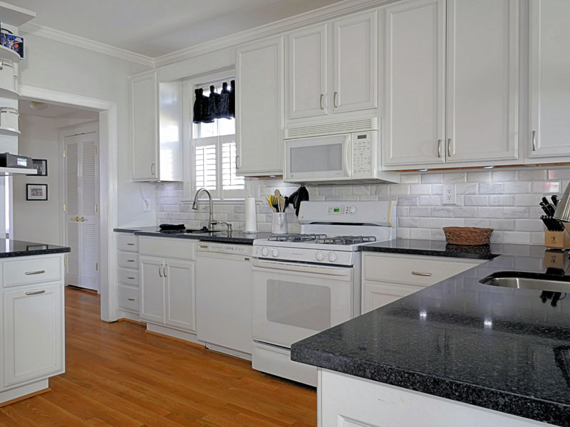
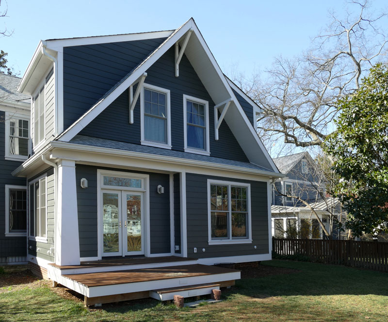
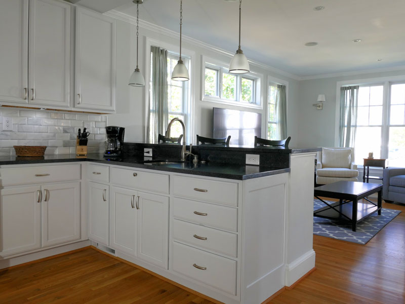
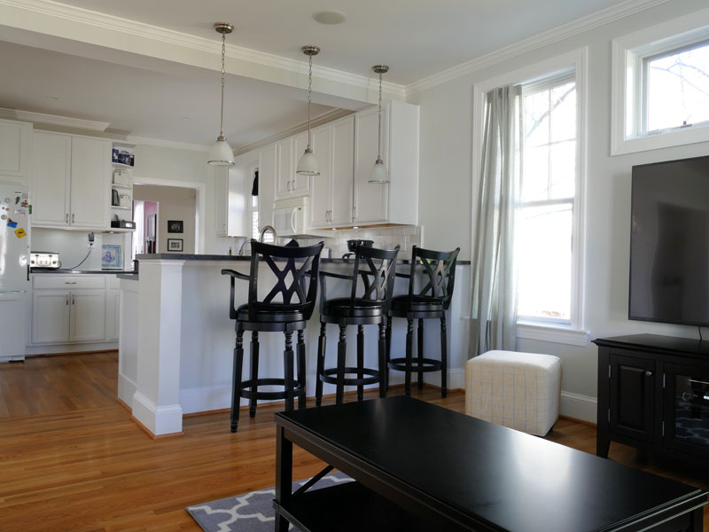
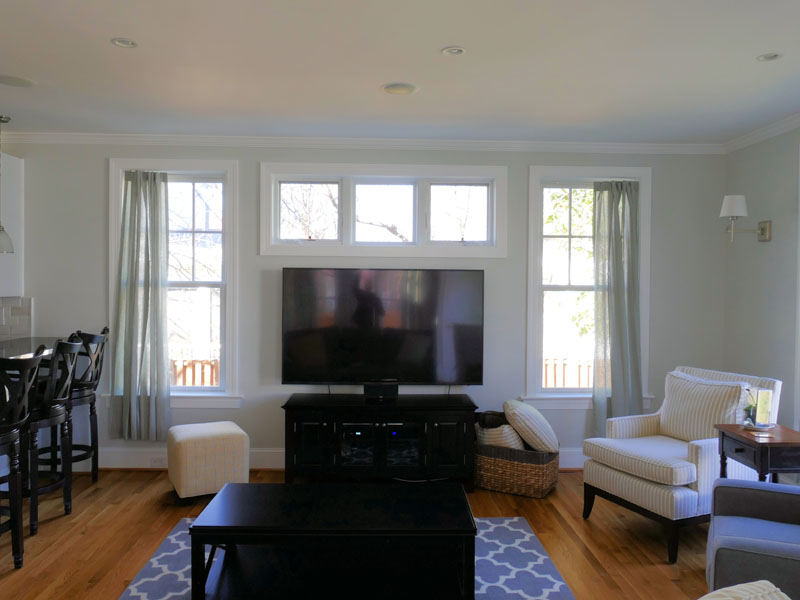
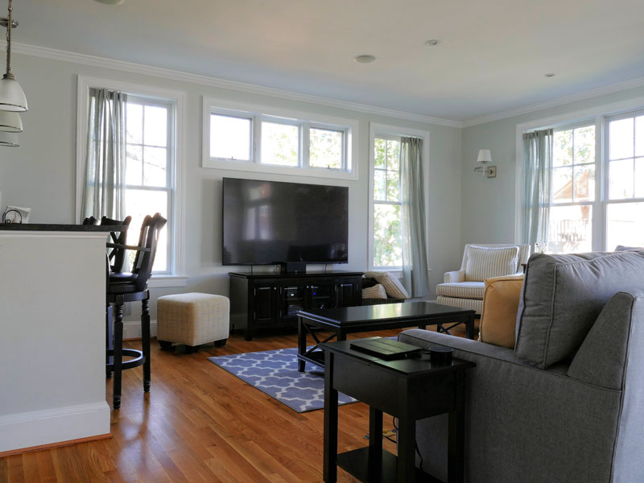
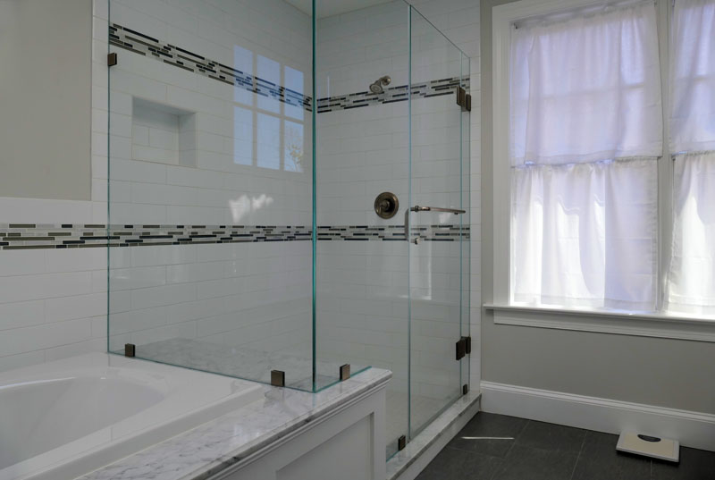
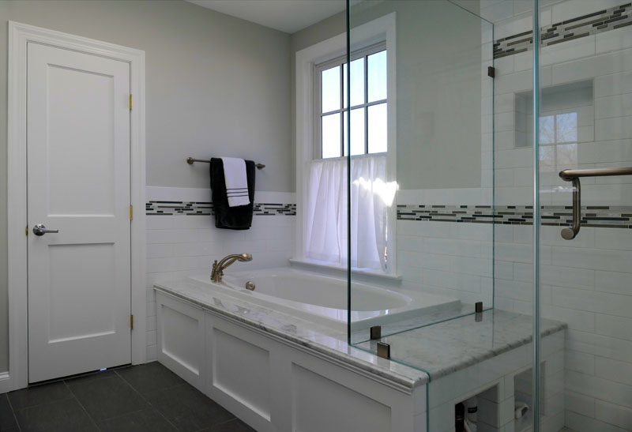
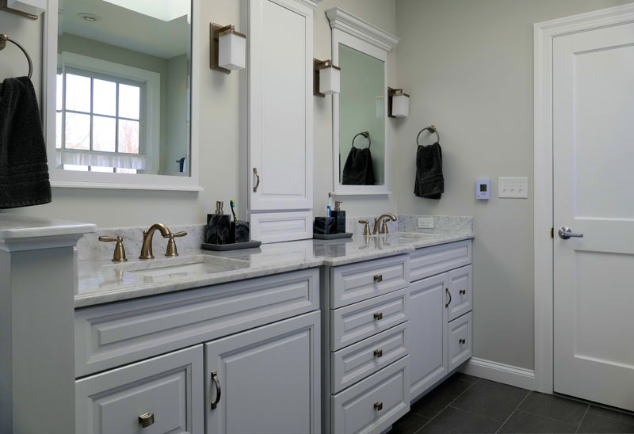
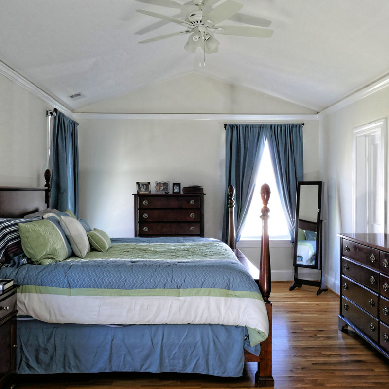
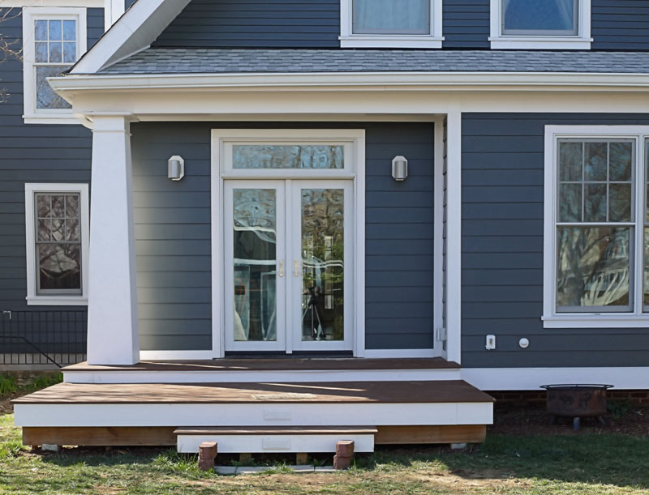
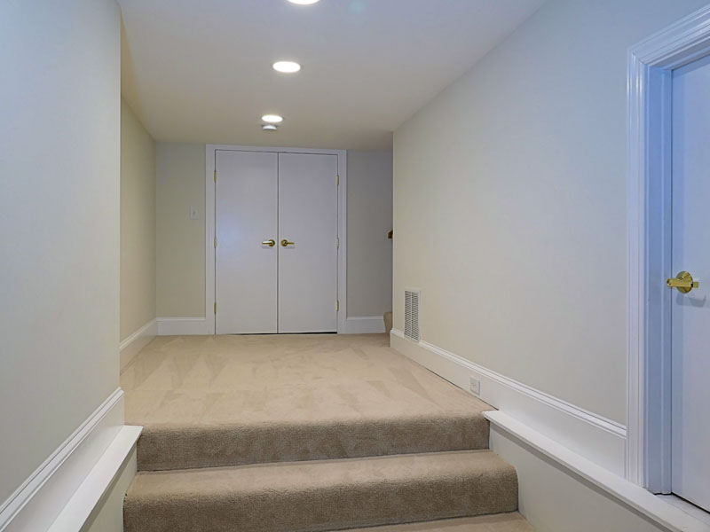


            </div>
        </div>


        </div>

    </div>
